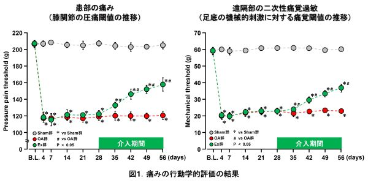
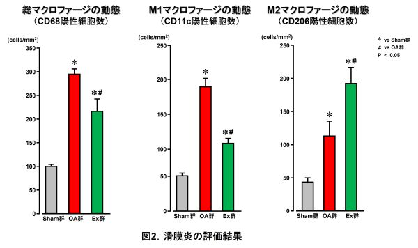
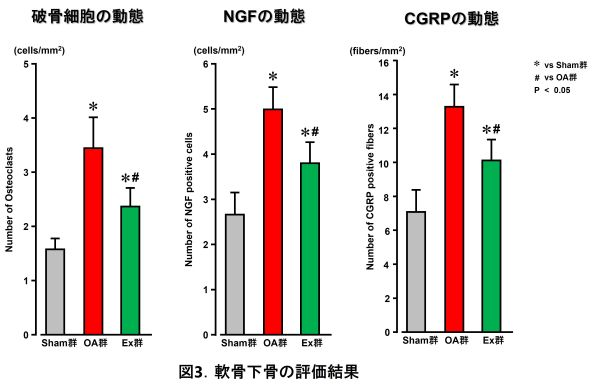
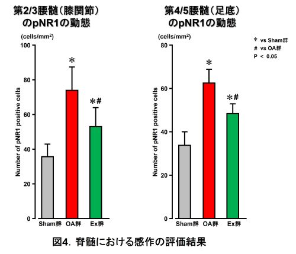

運動療法は変形性膝関節症（膝OA）の第1選択治療に位置づけられていますが，これまでの臨床研究では罹患期間が長い末期膝OAの痛みを運動療法が軽減できるか否かについては一定の結論に至っていませんでした．中枢感作への運動療法の有効性についても未解明だったため，研究者らはラット末期膝OAモデルを用いて検討しました．
本研究では末期膝OAに焦点をあて，痛みがあっても実施できるような低強度の筋収縮運動を負荷すると，患部やその遠隔部の痛みが軽減し，末梢組織における痛みの病態の改善や脊髄レベルにおける中枢感作の抑制が関与することを明らかにしました．
＜方法＞
実験動物：7週齢のWistar系雄性ラットを3群に振り分け（OA群，運動群，疑似処置群）
運動の方法：刺激周波数50Hz，2～3mA，250μsec，20分/日，5回/週，4週間（OA惹起後28日後から開始）
評価項目：圧痛閾値，von Frey機械刺激感覚閾値，関節軟骨・軟骨下骨の組織学的評価（トルイジンブルー染色），滑膜炎の評価（免疫組織染色でマクロファージ計測），軟骨下骨の評価（TRAP染色，NGF陽性細胞，侵害受容ニューロン密度），脊髄における感作の評価（リン酸化NR-1指標）
＜結果＞
運動群の圧痛閾値および機械刺激感覚閾値が介入後改善した．関節軟骨・軟骨下骨変性はOA群と同程度だが疼痛軽減効果を確認した．滑膜での総マクロファージ数とM1マクロファージ数が有意に低値，M2マクロファージ数が有意に高値であった．軟骨下骨の破骨細胞数，NGF陽性細胞数，一次侵害受容ニューロン数が有意に低値であった．脊髄後角のリン酸化NR-1陽性細胞数が有意に低値であった．




低強度の筋収縮運動が末期膝OAの痛みの軽減に有効であり，そのメカニズムには滑膜炎や軟骨下骨といった末梢組織および脊髄レベルにおける感作の改善が関与することを示し，膝OA運動療法の基礎的エビデンスを提供するものです．